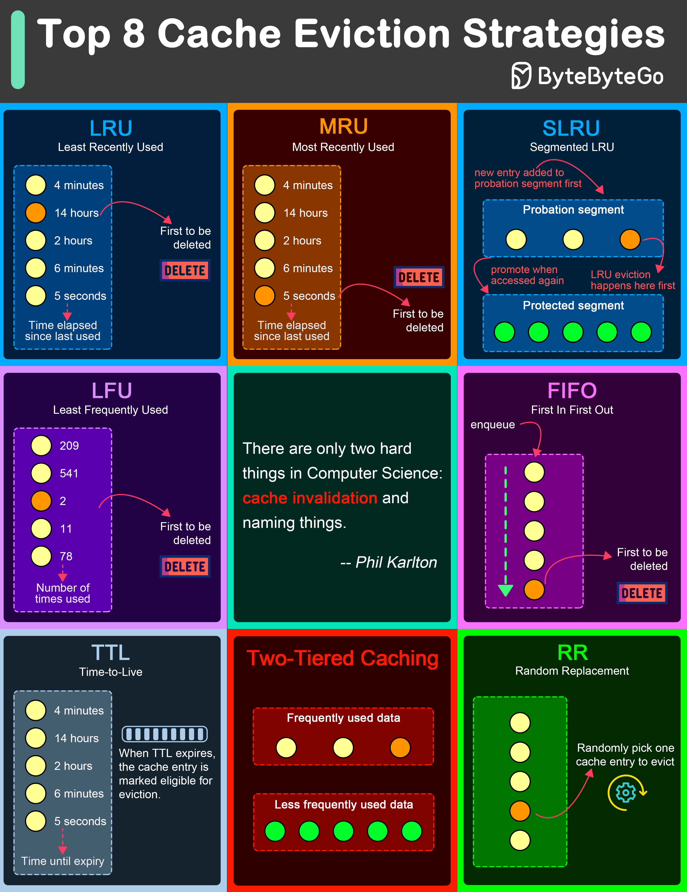

LRU eviction strategy removes the least recently accessed items first. This approach is based on the principle that items accessed recently are more likely to be accessed again in the near future.
Contrary to LRU, the MRU algorithm removes the most recently used items first. This strategy can be useful in scenarios where the most recently accessed items are less likely to be accessed again soon.
SLRU divides the cache into two segments: a probationary segment and a protected segment. New items are initially placed into the probationary segment. If an item in the probationary segment is accessed again, it is promoted to the protected segment.
LFU algorithm evicts the items with the lowest access frequency.
FIFO is one of the simplest caching strategies, where the cache behaves in a queue-like manner, evicting the oldest items first, regardless of their access patterns or frequency.
While not strictly an eviction algorithm, TTL is a strategy where each cache item is given a specific lifespan.
In Two-Tiered Caching strategy, we use an in-memory cache for the first layer and a distributed cache for the second layer.
Random Replacement algorithm randomly selects a cache item and evicts it to make space for new items. This method is also simple to implement and does not require tracking access patterns or frequencies.